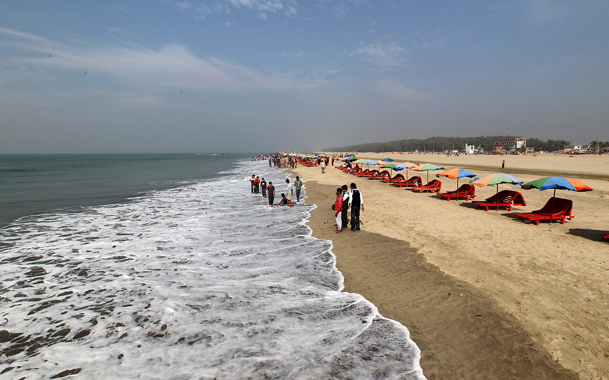
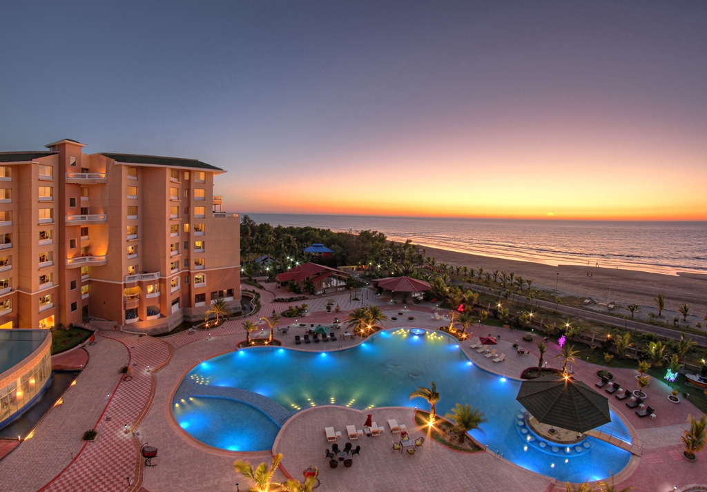
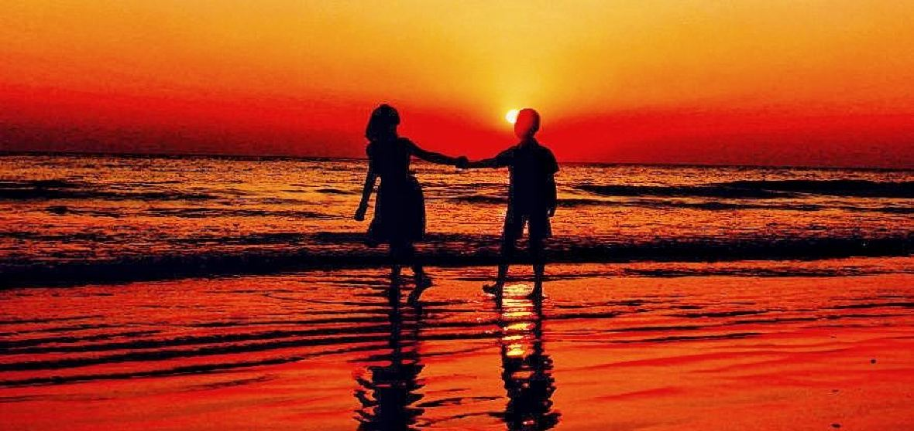
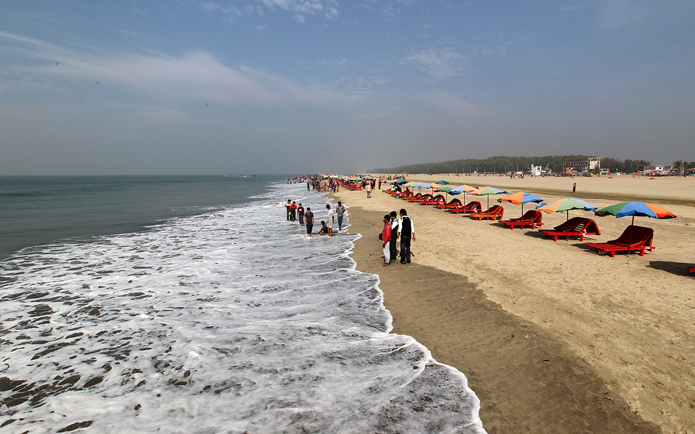
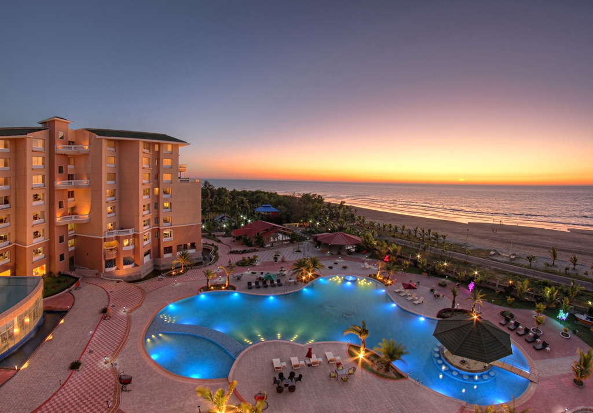
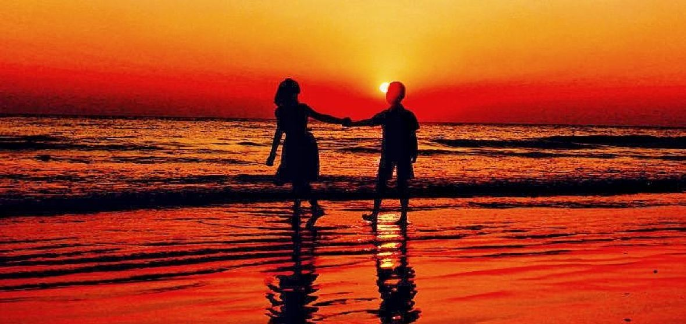
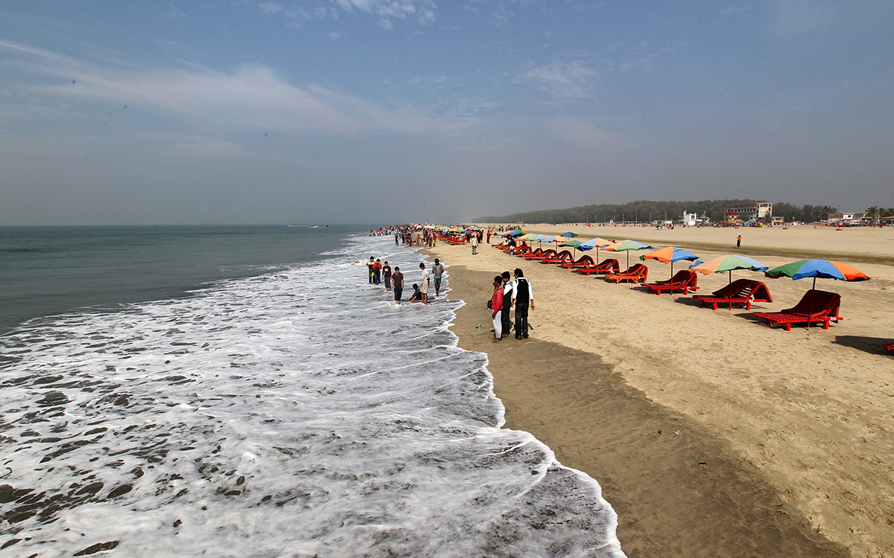
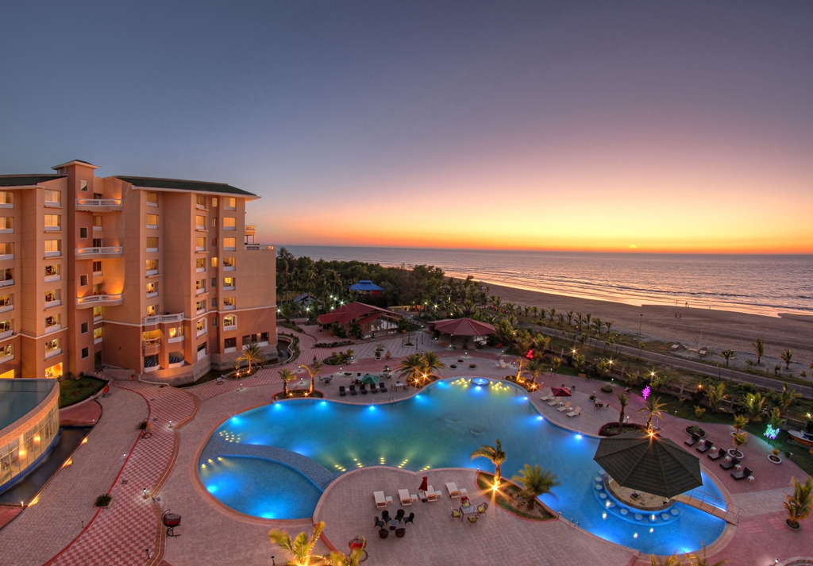
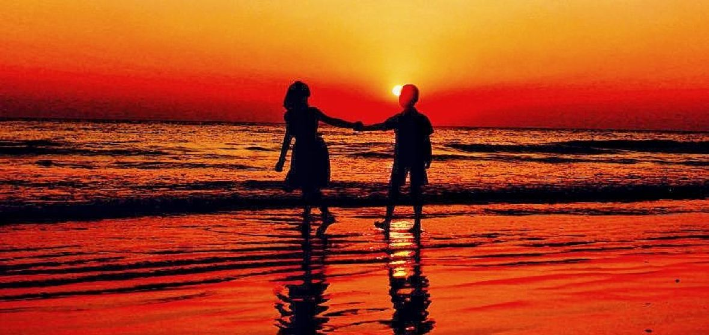

Cox's Bazar's Senario
 





For me, my favourite holiday destination in Bangladesh is Cox's Bazar.
Of all my holidays, there is one destination that stands out in my mind. Cox's bazar sea beach ,
a mind blowing place with sun and waves of blue water and mountains. To me, this place is the ultimate holiday destination in Bangladesh,
and the one that keeps calling me back to visit again. I love travelling, I enjoy photography and the skills behind them.
So, it's very hard to stay at home without visiting and nature photography on beach city Cox's bazar.
I'm always recommend this destination to all of my friends and foreign travelers, who want to visit and walking on world's longest sea beach.
When you arrive in beach city Cox's bazar, it can all seem a little strange, The streets bustle with different kinds of people,
and even walking from the coach to your hotel will be an assault on your senses, as the smells and sounds are so very different from any mega city.
It can be surreal walking through a city or a town, where people hawk their goods to you, where bartering is as natural as breathing,
and where food can cost barely anything in one location, and be really pricey in the next.
And hotels is available on beach. After a few hours of acclimatization, however,
you will soon realise that there is something special about this place.
Cox's Bazar is located 150 km (93 mi) south of the divisional headquarter city of Chittagong.
Cox's Bazar town has an area of 6.85 km2 (2.64 sq mi), and is bounded by Bakkhali River on the north and East, Bay of Bengal in the West, and Jhilwanj Union in the south.
The beach in Cox's Bazar has a gentle slope and with an unbroken length of 155 km (96 mi) it is often termed the "Longest natural unbroken sea beach" in the world.


